स्कन्ध 2 · अध्याय 6
श्लोक १
ब्रह्मोवाच–
वाचो वह्नेर्मुखं क्षेत्रं छन्दसां सप्तधातवः ।
हव्यकव्यामृतान्नानां जिह्वा सर्वरसस्य च।। १ ।।
वाचो वह्नेर्मुखं क्षेत्रं छन्दसां सप्तधातवः ।
हव्यकव्यामृतान्नानां जिह्वा सर्वरसस्य च।। १ ।।
श्लोक २
सर्वासूनाञ्च वायोश्च तन्नासे परमायने ।
अश्विनोरोषधीनाञ्च घ्राणो गन्धस्य चैव हि।। २ ।।
अश्विनोरोषधीनाञ्च घ्राणो गन्धस्य चैव हि।। २ ।।
श्लोक ३
रूपाणां तेजसां चक्षुर्दिवः सूर्यस्य चाक्षिणी ।
कर्णौ दिशाञ्च तीर्थानां श्रोत्रमाकाशशब्दयोः।। ३ ।।
कर्णौ दिशाञ्च तीर्थानां श्रोत्रमाकाशशब्दयोः।। ३ ।।
भागवततात्पर्यनिर्णय
श्लोक ४
तद्गात्रं वस्तुसाराणां सौभाग्यस्य च भाजनम् ।
त्वगस्य स्पर्शवायोश्च सर्वमेधस्य चैव हि।। ४ ।।
त्वगस्य स्पर्शवायोश्च सर्वमेधस्य चैव हि।। ४ ।।
श्लोक ५
रोमाण्युद्भिजजातीनां यैर्वा यज्ञस्तु सम्भृतः ।
केशश्मश्रुनखान्यस्य शिलालोहाभ्रविद्युताम्।। ५ ।।
केशश्मश्रुनखान्यस्य शिलालोहाभ्रविद्युताम्।। ५ ।।
भागवततात्पर्यनिर्णय
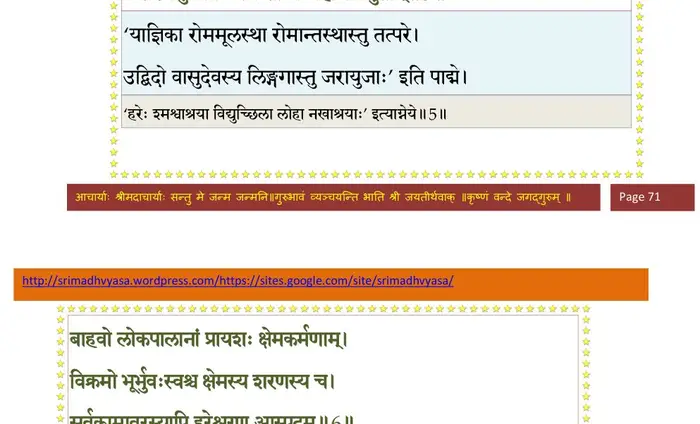
श्लोक ६
बाहवो लोकपालानां प््र•यशः क्षेमकर्मणाम् ।
विक्रमो भूर्भुवःस्वश्च क्षेमस्य शरणस्य च
सर्वकामवरस्यापि हरेश्चरण आस्पदम्।। ६ ।।
विक्रमो भूर्भुवःस्वश्च क्षेमस्य शरणस्य च
सर्वकामवरस्यापि हरेश्चरण आस्पदम्।। ६ ।।
भागवततात्पर्यनिर्णय
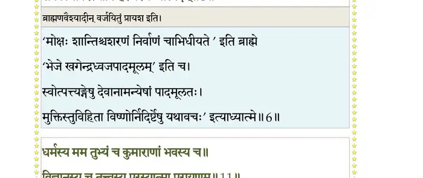
श्लोक ७
अपां वीर्यस्य सर्गस्य पर्जन्यस्य प््राजापतेः ।
पुंसः शिश्न उपस्थस्तु प््राजात्यानन्दनिर्वृतेः।। ७ ।।
पुंसः शिश्न उपस्थस्तु प््राजात्यानन्दनिर्वृतेः।। ७ ।।
श्लोक ८
पायुर्यमस्य मित्रस्य परिमोक्षस्य नारद ।
हिंसाया निऋतेर्मृत्योर्निरयस्य गुदः स्मृतः।। ८ ।।
हिंसाया निऋतेर्मृत्योर्निरयस्य गुदः स्मृतः।। ८ ।।
श्लोक ९
पराभूतेरधर्मस्य तमसश्चापि पश्चिमः ।
नाड्यो नदनदीनान्तु गोत्राणामस्थिसंहतिः।। ९ ।।
नाड्यो नदनदीनान्तु गोत्राणामस्थिसंहतिः।। ९ ।।
श्लोक १०
अव्यक्तरससिन्धूनां भूतानां निधनस्य च ।
उदरं विदितं पुंसो हृदयं मनसः पदम्।। १० ।।
उदरं विदितं पुंसो हृदयं मनसः पदम्।। १० ।।
श्लोक ११
धर्मस्य मम तुभ्यञ्च कुमाराणां भवस्य च ।
विज्ञानस्य च तत्वस्य परस्यात्मा परायणम्।। ११ ।।
विज्ञानस्य च तत्वस्य परस्यात्मा परायणम्।। ११ ।।
भागवततात्पर्यनिर्णय
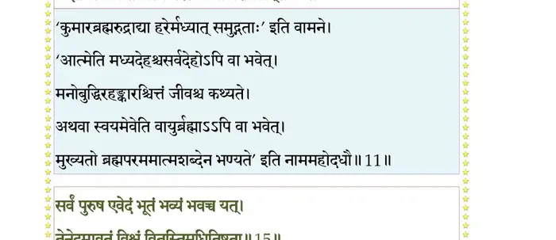
श्लोक १२
अहं भवान् भवश्चैव य इमे मुनयोऽग्रजाः ।
सुरासुरनरा नागाः खगा(गावो) मृगसरीसृपाः।। १२ ।।
सुरासुरनरा नागाः खगा(गावो) मृगसरीसृपाः।। १२ ।।
श्लोक १३
गन्धर्वाप्सरसो यक्षा रक्षोभूतगणोरगाः ।
पशवः पितरः सिद्धाः विद्याध्राश्चारणाद्रुमाः।। १३ ।।
पशवः पितरः सिद्धाः विद्याध्राश्चारणाद्रुमाः।। १३ ।।
श्लोक १४
अन्ये च विविधा जीवा जलस्थलनभौकसः ।
ग्रहर्क्षकेतवस्तारास्तडितः स्तनयित्नवः।। १४ ।।
ग्रहर्क्षकेतवस्तारास्तडितः स्तनयित्नवः।। १४ ।।
श्लोक १५
सर्वं पुरुष एवेदं भूतं भव्यं भवच्च यत् ।
तेनेदमावृतं विश्वं वितस्तिमधितिष्ठता।। १५ ।।
तेनेदमावृतं विश्वं वितस्तिमधितिष्ठता।। १५ ।।
भागवततात्पर्यनिर्णय
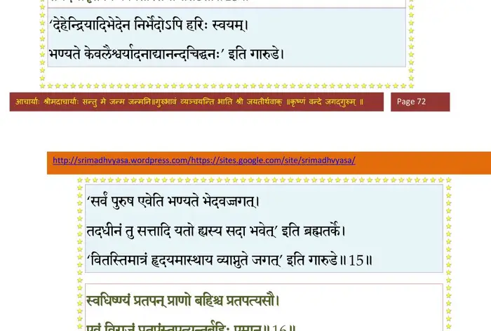
श्लोक १६
स्वधिष्ण्यं प््रातपन् प््र•णो बहिश्च प््रातपत्यसौ ।
एवं विराजं प््रातपंस्तपत्यन्तर्बहिः पुमान्।। १६ ।।
एवं विराजं प््रातपंस्तपत्यन्तर्बहिः पुमान्।। १६ ।।
भागवततात्पर्यनिर्णय
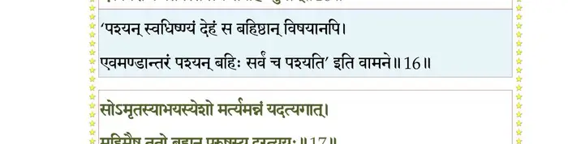
श्लोक १७
सोऽमृतस्याभयस्येशो मर्त्यमन्नं यदत्यगात् ।
महिमैष ततो ब्रह्मन् पुरुषस्य दुरत्ययः।। १७ ।।
महिमैष ततो ब्रह्मन् पुरुषस्य दुरत्ययः।। १७ ।।
भागवततात्पर्यनिर्णय
श्लोक १८
पादोऽस्य सर्वाभूतानि पुंसः स्थितिविदो विदुः ।
अमृतं क्षेममभयं त्रिमूर्ध्नोऽधायि मूर्धसु।। १८ ।।
अमृतं क्षेममभयं त्रिमूर्ध्नोऽधायि मूर्धसु।। १८ ।।
भागवततात्पर्यनिर्णय
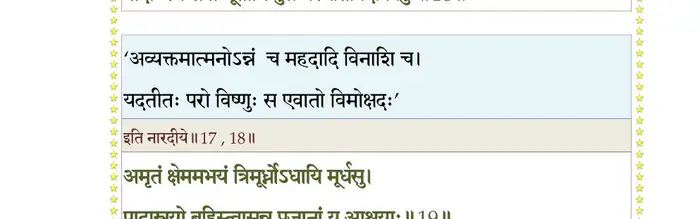
श्लोक १९
पादास्त्रयो बहिस्त्वासन्नप््राजानां य आश्रयाः ।
अन्तस्त्रिलोक्यास्त्वपरो गृहमेधैर्बृहद्धुतः।। १९ ।।
अन्तस्त्रिलोक्यास्त्वपरो गृहमेधैर्बृहद्धुतः।। १९ ।।
भागवततात्पर्यनिर्णय
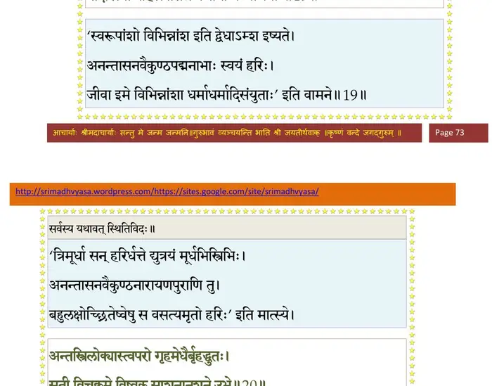
श्लोक २०
सृती विचक्रमे विष्वक्साशनानशने उभे ।
यदविद्या च विद्या च पुरुषस्तूभयाश्रयः।। २० ।।
यदविद्या च विद्या च पुरुषस्तूभयाश्रयः।। २० ।।
भागवततात्पर्यनिर्णय
श्लोक २१
तस्मादण्डाद्विराड् जज्ञे भूतेन्द्रियगुणाश्रयः ।
तद्द्रव्यमत्यगाद्विश्वं गोभिः सूर्य इवाश्रयम्।। २१ ।।
तद्द्रव्यमत्यगाद्विश्वं गोभिः सूर्य इवाश्रयम्।। २१ ।।
भागवततात्पर्यनिर्णय
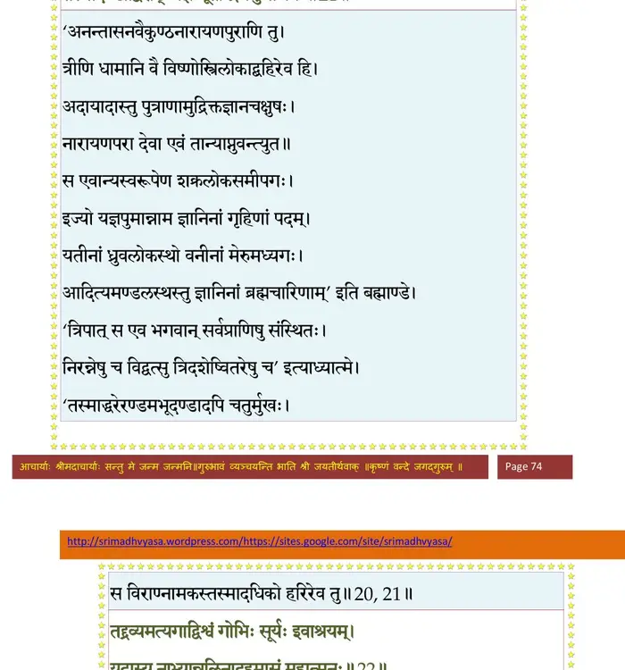
श्लोक २२
यदाऽस्य नाभ्यान्नलिनादहमासं महात्मनः ।
नाविन्दं यज्ञसम्भारान् पुरुषावयवानृते।। २२ ।।
नाविन्दं यज्ञसम्भारान् पुरुषावयवानृते।। २२ ।।
भागवततात्पर्यनिर्णय
श्लोक २३
तेषु यज्ञाश्च पशवः सवनस्पतयः कुशाः ।
इदञ्च देवयजनं कालश्चात्मगुणान्वितः।। २३ ।।
इदञ्च देवयजनं कालश्चात्मगुणान्वितः।। २३ ।।
भागवततात्पर्यनिर्णय
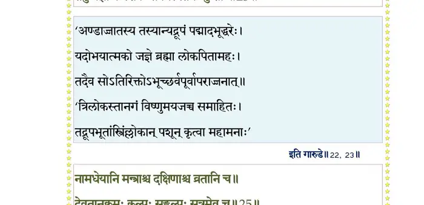
श्लोक २४
वसून्योषधयः स्नेहा रसलोहमृदो जलम् ।
ऋचो यजूंषि सामानि चातुर्होत्रञ्च सत्तम।। २४ ।।
ऋचो यजूंषि सामानि चातुर्होत्रञ्च सत्तम।। २४ ।।
श्लोक २५
नामधेयानि मन्त्राश्च दक्षिणाश्च व्रतानि च ।
देवतानुक्रमः कल्पः सङ्कल्पः सूत्रमेव च।। २५ ।।
देवतानुक्रमः कल्पः सङ्कल्पः सूत्रमेव च।। २५ ।।
भागवततात्पर्यनिर्णय
श्लोक २६
गतयो मतयः श्रद्धा प््र•यश्चित्तं समर्पणम् ।
पुरुषावयवैरेतैः सम्भाराः सम्भृता मया।। २६ ।।
पुरुषावयवैरेतैः सम्भाराः सम्भृता मया।। २६ ।।
श्लोक २७
इति सम्भृतसम्भारः पुरुषावयवैरहम् ।
तमेव पुरुषं यज्ञं तेनैवायजमीश्वरम्।। २७ ।।
तमेव पुरुषं यज्ञं तेनैवायजमीश्वरम्।। २७ ।।
श्लोक २८
ततस्ते भ्रातर इमे प््राजानां पतयो नव ।
अयजन् व्यक्तमव्यक्तं पुरुषं सुसमाहिताः।। २८ ।।
अयजन् व्यक्तमव्यक्तं पुरुषं सुसमाहिताः।। २८ ।।
श्लोक २९
ततश्च मनवः काल ईजिरे ऋषयोऽपरे ।
पितरो विबुधा दैत्याः मनुष्याः क्रतुभिर्विभुम्।। २९ ।।
पितरो विबुधा दैत्याः मनुष्याः क्रतुभिर्विभुम्।। २९ ।।
श्लोक ३०
नारायणे भगवति तदिदं विश्वमाहितम् ।
गृहीतमायोरुगुणे सर्गादावगुणे स्वतः।। ३० ।।
गृहीतमायोरुगुणे सर्गादावगुणे स्वतः।। ३० ।।
भागवततात्पर्यनिर्णय
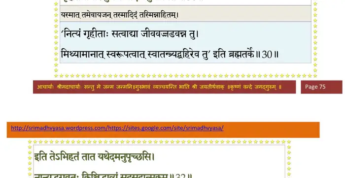
श्लोक ३१
सृजामि तन्नियुक्तोऽहं हरो हरति तद्वशः ।
विश्वं पुरुषरूपेण परिपाति त्रिशक्तिधृक्।। ३१ ।।
विश्वं पुरुषरूपेण परिपाति त्रिशक्तिधृक्।। ३१ ।।
श्लोक ३२
इति तेऽभिहितं तात यथेदमनुपृच्छसि ।
नान्यद्भगवतः किञ्चिद्भाव्यं सदसदात्मकम्।। ३२ ।।
नान्यद्भगवतः किञ्चिद्भाव्यं सदसदात्मकम्।। ३२ ।।
भागवततात्पर्यनिर्णय
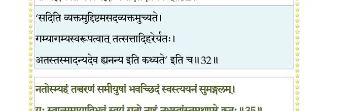
श्लोक ३७
न भारती मेऽङ्ग मृषोपलक्ष्यते न कर्हिचिन्मे मनसो मृषा गतिः ।
न मे हृषीकाणि पतन्त्यसत्पथे यन्मे हृदौत्कण्ठ्यवता धृतो हरिः।।
सोऽहं समाम्नायमयस्तपोमयः प््राजापतीनामभिवन्दितः पतिः ।
आस्थाय योगं निपुणं समाहितस्तन्नाध्यगच्छं यत आत्मसम्भवः।।
नतोऽस्म्यहं तच्चरणं समीयुषां भवच्छिदं स्वस्त्ययनं सुमङ्गलम् ।
यः स्वात्ममायाविभवं स्वयं गतो नाहं नभस्वांस्तमथापरे कुतः।।
नाहं न यूयं बत तद्गतिं विदुः न वामदेवः किमुतापरे सुराः ।
यन्मायया मोहितबुद्धयस्त्विदं विनिर्मितं स्वात्मसमं विचक्ष्महे।।
यस्यावतारकर्माणि गायन्ति ह्यस्मदादयः ।
न यं विदन्ति तत्वेन तस्मै भगवते नमः।। ३७ ।।
न मे हृषीकाणि पतन्त्यसत्पथे यन्मे हृदौत्कण्ठ्यवता धृतो हरिः।।
सोऽहं समाम्नायमयस्तपोमयः प््राजापतीनामभिवन्दितः पतिः ।
आस्थाय योगं निपुणं समाहितस्तन्नाध्यगच्छं यत आत्मसम्भवः।।
नतोऽस्म्यहं तच्चरणं समीयुषां भवच्छिदं स्वस्त्ययनं सुमङ्गलम् ।
यः स्वात्ममायाविभवं स्वयं गतो नाहं नभस्वांस्तमथापरे कुतः।।
नाहं न यूयं बत तद्गतिं विदुः न वामदेवः किमुतापरे सुराः ।
यन्मायया मोहितबुद्धयस्त्विदं विनिर्मितं स्वात्मसमं विचक्ष्महे।।
यस्यावतारकर्माणि गायन्ति ह्यस्मदादयः ।
न यं विदन्ति तत्वेन तस्मै भगवते नमः।। ३७ ।।
भागवततात्पर्यनिर्णय
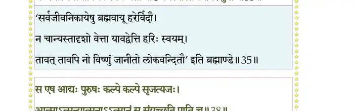
श्लोक ३८
स एष आद्यः पुरुषः कल्पे कल्पे सृजत्यजः ।
आत्माऽऽत्मन्यात्मनाऽऽत्मानं स संयच्छति पाति च।। ३८ ।।
आत्माऽऽत्मन्यात्मनाऽऽत्मानं स संयच्छति पाति च।। ३८ ।।
भागवततात्पर्यनिर्णय
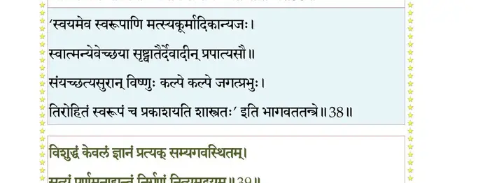
श्लोक ३९
विशुद्धं केवलं ज्ञानं प््रात्यक् सम्यगवस्थितम् ।
सत्यं पूर्णमनाद्यन्तं निर्गुणं नित्यमद्वयम्।। ३९ ।।
सत्यं पूर्णमनाद्यन्तं निर्गुणं नित्यमद्वयम्।। ३९ ।।
भागवततात्पर्यनिर्णय
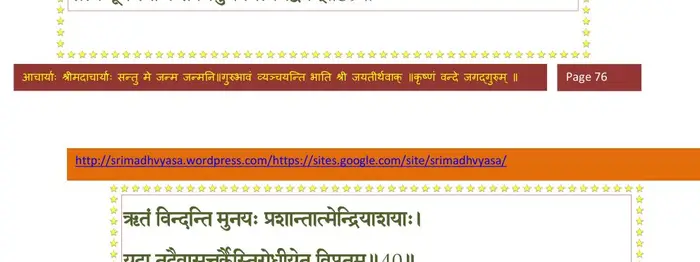
श्लोक ४०
ऋतं विन्दन्ति मुनयः प््राशान्तात्मेन्द्रियाशयाः ।
यदा तदैवासत्तर्कैस्तिरोधीयेत विप्लुतम्।। ४० ।।
यदा तदैवासत्तर्कैस्तिरोधीयेत विप्लुतम्।। ४० ।।
भागवततात्पर्यनिर्णय
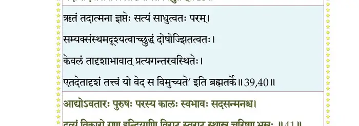
श्लोक ४२
आद्योऽवतारः पुरुषः परस्य कालः स्वभावः सदसन्मनश्च ।
द्रव्यं विकारो गुण इन्द्रियाणि विराड् स्वराट् स्थास्नु चरिष्णु भूम्नः।।
अहं भवो यज्ञ इमे प््राजेशाः दक्षादयो ये भवदादयश्च ।
स्वर्लोकपालाः खगलोकपालाः नृलोकपालास्तललोकपालाः।। ४२ ।।
द्रव्यं विकारो गुण इन्द्रियाणि विराड् स्वराट् स्थास्नु चरिष्णु भूम्नः।।
अहं भवो यज्ञ इमे प््राजेशाः दक्षादयो ये भवदादयश्च ।
स्वर्लोकपालाः खगलोकपालाः नृलोकपालास्तललोकपालाः।। ४२ ।।
भागवततात्पर्यनिर्णय
श्लोक ४३
गन्धर्वविद्याधरचारणेशाः ये यक्षरक्षोरगनागनाथाः ।
ये वा ऋषीणाम् ऋषभाः पितॄणां दैत्येन्द्रसिद्धेश्वरदानवेन्द्राः ।।४३।।
ये वा ऋषीणाम् ऋषभाः पितॄणां दैत्येन्द्रसिद्धेश्वरदानवेन्द्राः ।।४३।।
भागवततात्पर्यनिर्णय
श्लोक ४४
अन्ये च ये प््रोतपिशाचभूतकूष्माण्डयादोमृगपश्वधीशाः ।
यत्किञ्च लोके भगवन् महस्वदोजः सहस्वद्बलवत्क्षमावत् ।
ह्रीश्रीविभूत्यात्मवदद्भुतार्णं तत्तत्परं रूपवदस्वरूपम्।। ४४ ।।
यत्किञ्च लोके भगवन् महस्वदोजः सहस्वद्बलवत्क्षमावत् ।
ह्रीश्रीविभूत्यात्मवदद्भुतार्णं तत्तत्परं रूपवदस्वरूपम्।। ४४ ।।
भागवततात्पर्यनिर्णय
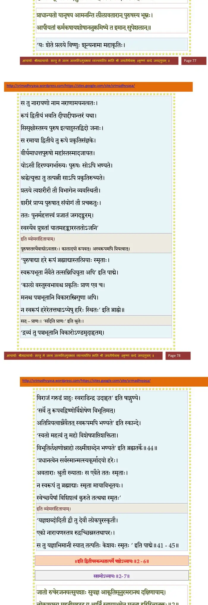
श्लोक ४५
प््र•धान्यतो यानृषय आमनन्ति लीलावतारान् पुरुषस्य भूम्नः ।
आपीयतां कर्मकषायशोषाननुक्रमिष्ये त इमान् सुपेशलान्।। ४५ ।।
आपीयतां कर्मकषायशोषाननुक्रमिष्ये त इमान् सुपेशलान्।। ४५ ।।
।। इति श्रीमद्भागवते द्वितीयस्कन्धे षष्ठोऽध्यायः ।।